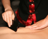
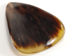
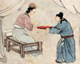
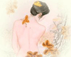
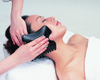
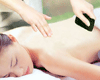

本站首页
中医简史
中医特色
中医常识
中医刮痧
中医新闻
中医刮痧
中医刮痧是传统的自然疗法之一，它是以中医皮部理论为基础，用器具（牛角、玉石、火罐）等在皮肤相关部位刮拭，以达到疏通经络、活血化瘀之目的。明代郭志邃著有《痧胀玉衡》一书，完整地记录了各类痧症百余种。
更多
刮痧基础

刮痧基础
刮痧的主要理论基础为经络学说，中医认为，刮痧可以使毛孔打开，淤积在...
刮痧常见问题解惑
刮痧由来与临床应用
什么是“痧”
刮痧具体的操作步骤
刮痧常见的方法
刮痧5注意
刮痧的作用和机理
刮痧治疗法
更多
器具手法

器具手法
古钱币是刮痧疗法使用的最常用的工具。目前已经发展到专业工具：刮痧板...
究竟刮痧应该如何刮
刮痧板的使用
刮痧的操作方法及补泻手法
常用刮痧方法及其特点
常用刮痧工具及其特点
刮痧手法详述
刮痧工具一览
刮痧的工具有很多，使用哪一种最好呢？
更多
刮痧文化

刮痧文化
刮痧是砭石疗法或刺络疗法的一种，长期以来流传于民间，薪火相传...
刮痧技术的学术源流
刮痧技术的基本原理
刮痧的器具制备
刮痧技术的技术规范
刮痧技术的操作规程
刮痧技术的适应证和禁忌证
刮痧技术的优势
刮痧技术的注意事项
更多
刮痧禁忌

刮痧禁忌
刮痧有行气去瘀开窍的作用，孕妇及月经来潮期间勿施行刮痧，当患者皮肤...
刮痧勿要片面追求出痧的颜色
保健刮痧的注意事项与禁忌
祛病刮痧有禁忌
中医刮痧的谨慎
刮痧的适应范围及禁忌
刮痧后注意的四点
刮痧时要注意的几点
什么时候不能刮痧
更多
刮痧养生

刮痧养生
利用刮痧保健的特点，达到健脑醒脑、聪耳明目、延缓人体功能衰退的养生目的...
刮痧养生需辩证虚证实证要分清[图]
身体七部位的正确刮痧方法
刮痧可舒筋活血
刮痧的治疗与保健介绍[图]
调理亚健康 刮痧帮助你
强强联合效更佳
上班族在家解暑用刮痧
刮痧养生法
更多
百病刮痧

百病刮痧
刮痧可以扩张毛细血管，增加汗腺分泌，促进血液循环，对于高血压、中暑...
伏天刮痧调肺病 “三伏贴”之外新办法[图]
酷夏中暑 穴位刮痧来急救
头痛刮痧疗法
头晕撮痧疗法
糖尿病刮痧疗法
头痛撮痧疗法
失眠足部刮痧疗法
健忘刮痧疗法
网站搜索
疾病分类
急症处理
传染病与寄生虫病
呼吸系统疾病
心血管疾病
消化系统疾病
分泌、代谢、营养和肾脏疾病
血液系统疾病
常见外科疾病
颅脑疾病
颈部和乳房疾病
周围血管疾病和淋巴管疾病
心、胸、肺疾病
食管贲门与腹部疾病
泌尿科疾病
运动系统疾病
节骨与关节疾病
常见皮肤病
新生儿疾病
婴幼儿童疾病
妇科疾病
经期疾病
孕产妇疾病
眼科疾病
<耳鼻喉科疾病
口腔科疾病
神经、精神科疾病
老年疾病
癌症肿瘤
疑难杂症
癌症肿瘤
病毒性肝炎
肝硬化
脂肪肝
酒精肝
肝腹水
痛风
甲亢
糖尿病
癫痫
失眠
面瘫
偏头痛
抑郁症
更年期综合症
面肌痉挛
三叉神经痛
重症肌无力
神经衰弱
脊髓空洞症
白内障
青光眼
黄斑变性
眼底病变
黄斑裂孔
眼底出血
视神经萎缩
玻璃体浑浊
视网膜色素变性
心肌炎
白塞氏病
红斑狼疮
干燥综合征
硬皮病
风湿类风湿
坐骨神经痛
股骨头坏死
骨髓炎
腰椎间盘突出
强直性脊柱炎
颈椎病
间质性肺炎
慢性结肠炎
慢性胃溃疡